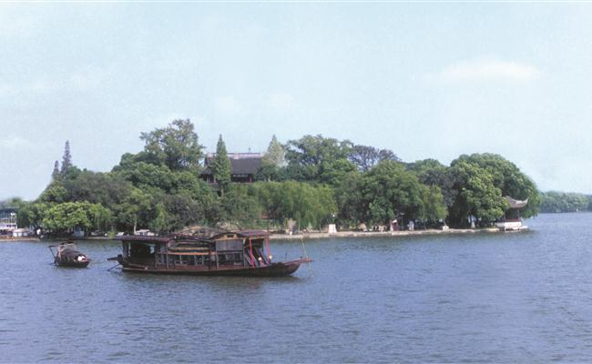

南湖街道南湖社区
全国重点文物保护单位
重要历史事件和重要机构旧址
嘉兴南湖中共一大会址位于浙江省嘉兴市南湖区南湖街道南湖社区南湖湖心岛，南湖现面积0.53平方千米，为浙江三大名湖之一，自古以来就是江南游览名胜。湖中小岛呈圆形，面积约为一公顷，岛上有以烟雨楼为主体的古园林建筑群。烟雨楼始建于五代，原址在南湖之滨，南宋建炎以后，屡有废兴。明嘉靖年间迁于湖心岛上，万历十年（1582年）知府龚勉又增筑亭榭，南筑台为“钓鳌矶”北拓放生池称“鱼乐国”现建筑规模为清同治以后陆续重建。现烟雨楼为1918年重建之楼。1921年8月初，中国共产党第一次全国代表在南湖的一艘游船上闭幕，宣告中国共产党成立。南湖、烟雨楼由此成为中国共产党诞生的见证和象征之一，2001年6月25日，嘉兴南湖中共一大会址公布为全国重点文物保护单位。
嘉兴南湖中共一大会址的现状保护范围为“南湖湖心岛、纪念船停泊处及其延伸湖面水域，东南方离岛边240米，其余方向离岛边120米之椭圆形水域。”
嘉兴南湖中共一大会址的现状建设控制地带为“沿南湖湖域四周湖滨，东至南湖路西侧，西北至沪杭铁路东南侧，西、南离湖心岛边平均300米之范围。”
